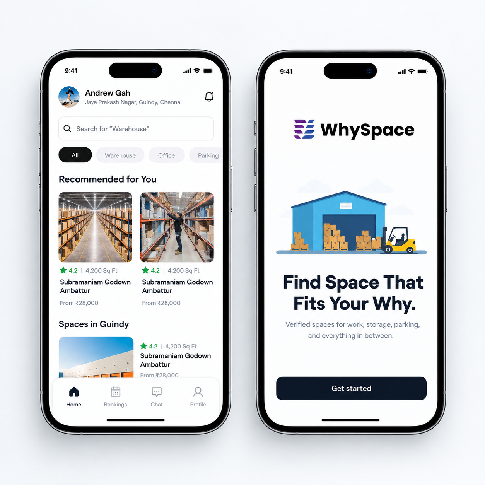

2026 · Portfolio project
Warehouse Space Sharer
A mobile platform that helps logistics managers and businesses discover, compare, and rent available commercial spaces.
View Figma designRole
UI/UX Designer
Type
Personal Project
Platform
Mobile App
Tools
Figma, FigJam
Duration
2–4 Weeks

Overview
WhySpace is a mobile platform designed to help logistics managers and businesses discover, compare, and rent available commercial spaces such as warehouses, storage facilities, and other business spaces.
The goal was to make commercial space discovery simpler by bringing search, filtering, property details, and booking into one intuitive experience.
The problem
Finding suitable commercial warehouse space can be time-consuming. Logistics managers often need to search across multiple platforms, compare different properties, check availability, and verify important details before making a decision.
WhySpace aims to simplify this process by providing a centralized platform where users can quickly discover suitable spaces and make informed rental decisions.
User pain points:
- Difficult to find suitable spaces quickly
- Information is scattered across different platforms
- Comparing multiple properties takes time
- Important property details may not be immediately visible
- Booking and enquiry processes can be complicated
Who it's for
- Logistics managers
- Small and medium businesses
- E-commerce businesses
- Warehouse operators
- Businesses looking for temporary storage space
What users expect
I explored the existing commercial property discovery experience to understand common user expectations and identify opportunities for improvement. Users need:
- Location-based discovery
- Clear property information
- Easy-to-use filters
- Transparent pricing and availability
- Relevant photos and facilities
- A simple enquiry and booking flow

WhySpace brings discovery, evaluation, and booking into one mobile experience.
Information architecture
The app structure was planned around the user's primary task: discover → evaluate → select → book.
Home → Search → Filters → Space Listing → Space Details → Enquiry / Booking → Confirmation
User flow
- Open the app
- Enter a location or search requirement
- Browse available spaces
- Apply filters
- Select a suitable space
- Review space details
- Check availability and pricing
- Send an enquiry or proceed with booking
- Receive confirmation

Wireframe exploration of the Find Space flow.

Information architecture for the discovery and booking journey.
Testing & iterations
I tested the core flow to identify usability issues and understand whether users could easily:
- Search for a space
- Apply filters
- Understand property information
- Find pricing and availability
- Take the next booking or enquiry action
Based on feedback, I refined the information hierarchy, CTA placement, and content organization.
Improvements made:
- Search visibility
- Filter accessibility
- Property card hierarchy
- Space detail information
- CTA placement
- Navigation clarity
Outcome
WhySpace brings commercial space discovery into a more structured and user-friendly mobile experience.
The final design helps users move through the journey from searching for a space to evaluating and enquiring about it with fewer unnecessary steps.
My role & learnings
As the UI/UX Designer, I worked on problem definition, user research, information architecture, user flow, wireframing, UI design, design system, prototyping, usability testing, and design iterations.
Key learnings:
- Clear information hierarchy
- Designing efficient search experiences
- Making comparison easier
- Reducing friction in complex user flows
- Using usability feedback to improve the final design
Interested in a similar product design engagement? Get in touch — I’m available immediately and open to relocation.
Ready to start?
Got a similar project?
I'm available for new projects. Tell me about what you're building and let's see if we're a good fit.
Start a project →